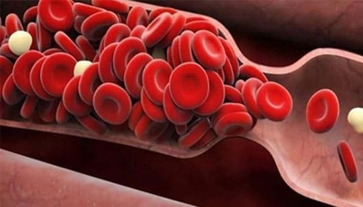

Usia tidak menghancurkan hidup Anda! Seorang dokter berusia 90 tahun mengungkapkan rahasia kehidupan dan kesehatannya yang sangat baik
Intan - ahli jantung Indonesia terkenal. Dia pensiun pada usia 65, tetapi dia menolak untuk duduk diam di usia tuanya, baik secara mental maupun fisik. Ny. Intan telah pensiun lebih dari 25 tahun dan mungkin, dana pensiun tidak menyukainya! Hari ini, meskipun dia berusia 90 tahun, dia merasa seperti berusia 60 tahun.
Rahasia umur panjang terletak pada fokus pada kesehatan kardiovaskular, indeks tekanan darah dan yang paling penting pemurnian darah. Jika pembuluh darah bersih dan sehat, seseorang dapat hidup di atas 120 tahun dan masih sehat. Pen siunan ahli jantung ini adalah bukti hidup untuk ini.
Reporter kami mencoba melakukan wawancara dengannya. Intan berbagi secara terperinci metode dialisis dan menjaga jantung tetap sehat untuk memperpanjang hidup.
Halo dokter, Anda telah berulang kali menyatakan bahwa menjaga pembuluh darah bebas dari bakteri adalah dasar untuk menciptakan jantung yang sehat dan berumur panjang. Mengapa menurut Anda begitu?
- Halo, saya akan menjawab pertanyaan Anda. Jawabannya jelas. Pengoperasian semua sistem dan organ internal tergantung pada kualitas sirkulasi darah.
Apa itu sirkulasi darah? Ini adalah pasokan oksigen dan nutrisi, serta penghilangan karbon dioksida dan limbah dari proses metabolisme di organ internal. Ketika muda, remaja harus aktif, muda, elastis dan pembuluh darah sehat - nutrisi semua organ optimal. Tetapi seiring bertambahnya usia, kita kurang berolahraga dan menyebabkan penyumbatan pembuluh darah dan masalah gula darah. Ini terjadi karena berbagai faktor - tidak hanya dari faktor berbahaya (mis. Merokok, gizi buruk, lingkungan tercemar, gaya hidup stagnan) tetapi juga faktor alami (mis. Volumetrik akumulasi lemak, yang terjadi pada orang seiring bertambahnya usia).
Apa itu obstruksi pembuluh? Bayangkan pipa airnya sudah karatan, jadi apa hasil akhirnya? Meningkatkan tekanan dan rasa air yang terkontaminasi. Hal yang sama berlaku untuk pembuluh darah. Ketika kolesterol atau zat lain menumpuk di pembuluh darah, tekanan darah (darah yang terkontaminasi adalah penyebab utama hipertensi dan diabetes), darah itu sendiri memiliki kotoran, sirkulasi darah menjadi lebih buruk dan lebih buruk. Semua organ dalam tubuh menderita, dan pada akhirnya, memengaruhi orang.
Manusia berangsur-angsur bertambah tua. Jika pembuluh darah disaring secara berkala, seseorang dapat hidup setidaknya 120 tahun dan masih sehat. Ini berarti bahwa pemurnian darah dapat secara signifikan memperpanjang hidup dan meningkatkan kesehatan. Saya selalu menyarankan ini kepada pasien saya, selalu menjaga pembuluh darah saya. Semua yang mengikuti saran saya hidup lebih lama dari teman-teman mereka.
Ini adalah gambar pembuluh darah yang tersumbat. Jika Anda belum pernah membersihkan pembuluh darah sebelumnya dan Anda berusia lebih dari 40 tahun, pembuluh darah dan pembuluh darah Anda terinfeksi serius. Ini akan segera berdampak negatif bagi kesehatan Anda seperti penyakit jantung dan diabetes.
- Dokter, apa penyebab sumbatan pembuluh darah?
- Seperti yang saya katakan, semua organ dalam tubuh terpengaruh. Tetapi pertama-tama adalah sistem organ yang berhubungan langsung dengan sirkulasi darah, yaitu sistem kardiovaskular. Pembuluh darah yang terkontaminasi juga menyebabkan penyakit lain seperti:
- Aterosklerosis: Pembuluh darah berhenti bekerja, pembuluh darah kecil benar-benar tersumbat, dan pembuluh darah besar memiliki kolesterol tinggi.
- Penyakit jantung iskemik: Disebabkan oleh anemia yang sering di arteri koroner, sehingga mengembangkan pembuluh darah yang terinfeksi yang mencegah pembuluh darah dan arteri.
- Stroke: Ketika pasokan darah ke jaringan otak rusak secara permanen, ujung saraf mulai mati, yang menyebabkan hilangnya fungsi tertentu.
- Hipertensi: Ketika pembuluh darah menyempit karena penyumbatan, tekanan darah naik.
- Varises: Penyakit ini menyerang tidak hanya pada kaki (seringkali membuat wanita khawatir) tetapi juga bagian dalam tubuh. Salah satu konsekuensi dari varises adalah wasir.
- Trombosis vena dan arteri: Pada infeksi persisten, gumpalan darah dapat terbentuk di pembuluh darah, yang menyebabkan kerusakan total pembuluh darah, yang dapat menyebabkan sel di satu atau organ tubuh. yang lain meninggal. Jika gumpalan darah pecah dan memasuki aliran darah, itu dapat menyebabkan penyumbatan pembuluh darah di jantung, yaitu serangan jantung, bertanggung jawab atas 70% penyebab kematian.
- Diabetes: Kadar glukosa darah pasien meningkat karena tubuh tidak dapat memproduksi insulin dan tidak dapat menggunakan insulin secara efektif.
- Jadi, apakah ada gejala yang perlu diketahui jika pembuluh tersumbat, dokter?
- Tentu saja saya lakukan. Gejala utama meliputi:
- Migrain
- Pusing
- Nyeri di daerah dada
- Tangan dan kaki goyah
- Memori buruk
- Insomnia
- Gangguan penglihatan dan pendengaran
- Hipertensi
- Napas pendek dan angina
- Kulit pucat di kaki
Tetapi bahkan jika Anda tidak memiliki gejala-gejala ini, Anda masih perlu membersihkan pembuluh darah Anda setidaknya setiap 5 tahun setelah usia 30 tahun.
Faktanya, pembuluh darah tersumbat dengan cukup cepat, terutama pada orang tua. Jangan berpikir ini karena kebiasaan makan yang buruk. Terkadang, hanya makan sosis atau telur sudah cukup untuk menyebabkan penumpukan kolesterol. Seiring berjalannya waktu, zat-zat ini akan menumpuk semakin banyak.
- Bisakah Anda memberi tahu kami rahasia membersihkan pembuluh darah Anda?
Sejauh ini, saya butuh berbulan-bulan untuk memurnikan pembuluh darah. Saya pribadi memilih ramuan itu, mencari di toko, atau memesannya melalui internet, lalu menyiapkannya. Sekarang saya tidak melakukan ini lagi, karena rekan-rekan asing saya dari Heart Institute telah menciptakan makanan fungsional yang sangat baik dan murah, yang digunakan untuk membersihkan pembuluh darah. Produk ini disebut Arteril. Produk ini dimaksudkan untuk menormalkan tekanan darah dan meningkatkan hipertensi, tetapi bekerja melalui pembersihan arteri dan vena. Oleh karena itu, produk ini sempurna untuk memperpanjang usia layanan.
 PESAN ARTERIL
PESAN ARTERIL
Arteril adalah alat yang sangat baik, membantu membersihkan pembuluh darah yang tersumbat dalam waktu 1-2 minggu setelah asupan rutin.
Saya juga ingin mencatat bahwa makanan fungsional ini tidak mengandung bahan kimia, tetapi hanya diekstraksi dari tanaman yang berguna untuk membersihkan pembuluh darah, sehingga produk ini tidak hanya tidak berbahaya tetapi juga sangat membantu. untuk tubuh. Komponen tersebut meliputi:
- Kabel sendok makan tinggih
- Cao melon pahit
- Ganoderma tinggi
- Buah cao
- Spirulina
- Beta Glucan
- Asam Alpha Lipoic
Pasien masih menghubungi saya untuk meminta nasihat, termasuk cuci darah. Baru-baru ini saya memperkenalkan mereka pada suplemen ini. Produk ini sangat bermanfaat bagi Anda.
Statistik resmi di situs Heart Institute, pemurnian pembuluh darah diambil dari hasil penelitian klinis. Sekitar 2000 pasien berpartisipasi dalam penelitian ini. Semua pasien telah menggunakan Perawatan Emas Jerman.
Hasil survei:
- Menormalkan tekanan darah dalam 1-2 hari setelah menggunakan produk ini - 99% dari peserta penelitian
- Normalisasi detak jantung setelah pengobatan - 97% orang yang disurvei
- Hapus kolesterol sepenuhnya setelah menjalani pengobatan - 99% dari mereka yang disurvei
- Peningkatan efektivitas dalam pengobatan penyakit kronis - 99% dari mereka yang disurvei
- Tingkatkan kesehatan secara keseluruhan - 100% orang yang disurvei
- Tidak ada efek samping - 100% dari penelitian.
- Berapa harga Arteril dan di mana membelinya?
- Anda mungkin tahu bahwa saya sendiri sudah pensiun dan saya tidak mampu membeli obat mahal. Itu sebabnya saya tidak merekomendasikan obat mahal. Arteril adalah produk yang sangat terjangkau, terutama sekarang - Arteril adalah diskon 50%.
Suplemen penting untuk menstabilkan tekanan darah dan mencegah gula darah. Di bawah program ini, semua orang mendapat diskon 50%.
Petunjuk tentang cara membeli "Arteril" dan pengiriman ke lokasi mana pun di negara ini
Untuk memesan Arteril, ikuti langkah-langkah ini:
- Isi formulir situs web resmi.
- Seorang operator kemudian akan menghubungi Anda, menentukan alamat pengiriman
- Setelah 1-5 hari (diperlukan pengiriman), kurir akan mengirimkan produk Arteril.
Untuk menjaga pembuluh darah yang sehat, saya sarankan menggunakannya setiap 1-2 tahun. Ini sangat penting bagi orang tua. Jika Anda berada di usia ini, Anda dapat meningkatkan kesehatan dan menunda proses penuaan.
- Terima kasih banyak untuk wawancara mendetail.
Mohon diperhatikan!
Portal kami memberikan diskon diskon kepada pembacanya untuk produk Perawatan Emas Jerman. Cobalah
keberuntungan Anda dan klik tombol "RECORD". Jika beruntung, Anda dapat memesan obat dengan harga lebih
murah dari biasanya!
Semoga beruntung!
 RECORD
RECORD
Harga telah menurun
Rp. 490.000
Rp. 165.000
Annisa
Aceh BesarAngga
Bener MeriahDenny
East AcehDewi
Gayo LuesJonathan
Pidie JayaBintang
SimeulueDinda
Southeast Aceh